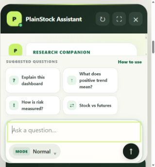

Tip: the assistant button sits at the bottom-right of the Research page. Suggested questions are the easiest place to begin.
Use it in four steps
Choose the right mode

This is the real chatbot: tap the mode button, choose Normal, Stock Analytics, or Futures, then check that the button displays your new choice before asking the question.
Remember: Stock Analytics needs a stock to be loaded first. Futures mode needs you to choose a market before it can describe recent conditions.
Normal: learn or clarify an idea
Use Normal when your question is not tied to one selected stock or futures market.
Explain volatility like I am new.
Volatility describes how widely and quickly a price moves up and down.
Good examples: “What is a moving average?”, “Compare volatility and drawdown”, or “Why does diversification matter?”
Stock Analytics: discuss the stock on screen
This mode reads the stock currently loaded on the Research dashboard. Load the company before opening your conversation.
Give me the full simple analysis.
I’ll separate the price trend from business health, valuation, and risks.
Check the context label: it should show the ticker you mean to discuss. A positive price trend does not prove that the business is healthy or that the shares are cheap.
Futures: describe recent market conditions
Choose a market and time view first. The assistant then describes direction, possible price zones, and a risk line.
Possible zonesNot guaranteed prices
How to use the result: “Upward”, “Downward”, or “No clear direction” describes recent price evidence. Target zones and the risk line are planning references—not predictions or instructions to trade.
A useful question has three parts
“Explain this stock’s debt trend in simple terms and tell me what I should verify.”
The assistant can misunderstand a question or use incomplete information. Check important numbers and never treat a trend, target zone, or AI answer as a guaranteed outcome or personal financial instruction.